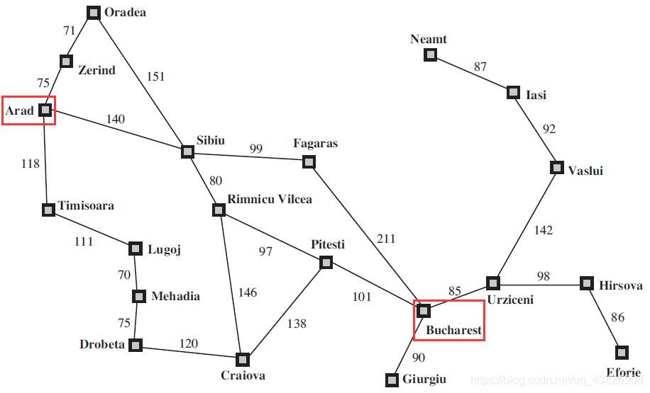
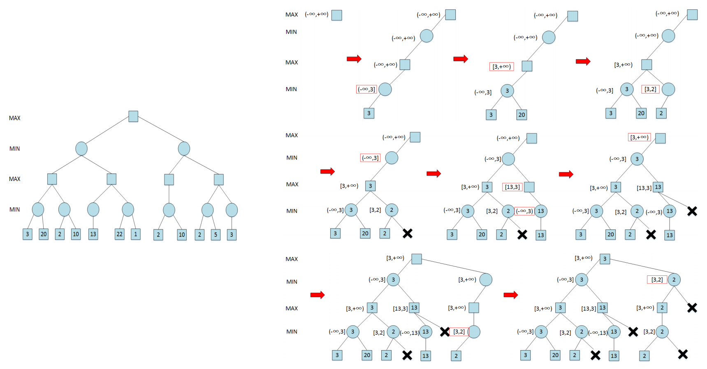

#Ch3 搜索算法
# 无信息搜索
BFS DFS 略
# 启发式搜索
- 贪婪优先搜索
- 每次取最短的；缺点：不一定是最优的
- 时间和空间复杂度均为 ，b 是搜索树分支因子，m 是最大深度

每次取当前节点的下一个节点到终点中直线距离最短的
- A * 算法
- 评价函数：f (n) = g (n) + h (n)
- 代价函数 g (n) 表示从起始结点到结点 n 的开销代价值
- 启发函数 h (n) 表示从结点 n 到目标结点路径中所估算的最小开销代价值。
- 评价函数 f (n) 可视为经过结点 n、具有最小开销代价值的路径。
- 在最短路径问题中，g (?) 为当前选择的路径的实际距离，即从上一个节点到下一个节点的实际距离，?(?) 为下一个节点到目标城市的直线距离。每一次搜索，下一个节点选择与此刻城市连接的所有节点中，g (?)+?(?) 最小的城市节点。
取（当前节点到下一节点的距离 + 下一节点到目标城市的距离）最短的
A * 算法的完备性和最优性取决于搜索问题和启发函数的性质
一个良好的启发函数需要满足：可容性（admissible）; 一致性（consistency）
如果启发函数是可容的，那么树搜索的 A * 算法满足最优性 (最优性：搜索算法是否能保证找到的第一个解是最优解)
满足一致性条件的启发函数一定满足可容性条件，反之不一定
# 对抗搜索
-
最小最大搜索（minimax）
- 最小最大搜索是一个在你和对手轮流行动的情况下，为你自己寻找最优策略的算法。
- 算法：略
- 时间复杂度：
- 空间复杂度：
-
\alpha-\beta 剪枝
- Minimax 会穷举整个博弈树，但我们可以用剪枝技巧跳过一些无用分支，让它跑得更快
- max 层的下界取下一层（上界）里面最大的；min 层的上界取下一层（下界）里面最小的
懒得写直接看例子：

Alpha-Beta 剪枝算法什么时候扩展的结点数量最少？ - 每一层最左端结点的所有孩子结点均被访问，其他节点仅有最左端孩子结点被访问、其他孩子结点被剪枝。
如果一个节点导致了其兄弟节点被剪枝，可知其孩子节点必然被扩展。 - 最优效率下时间复杂度： (或者 m+1); 最差的就是完全没剪枝和 minimax 一样
-
蒙特卡洛树搜索
- 选择 (UCB)、扩展、模拟 (随机)、反向传播
- 悔值函数
没完全懂，后面再回来研究